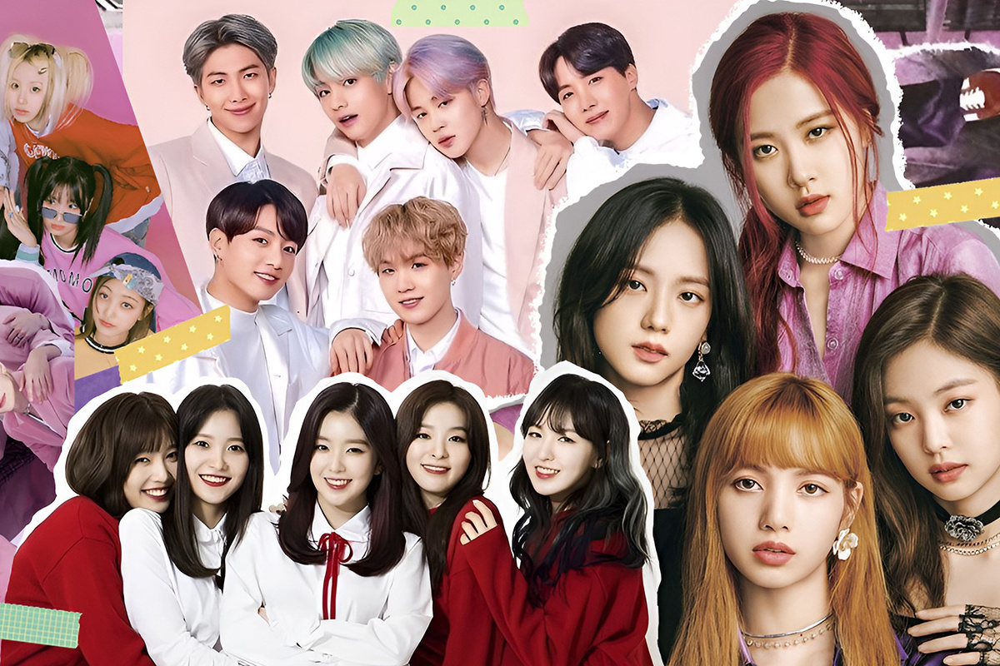
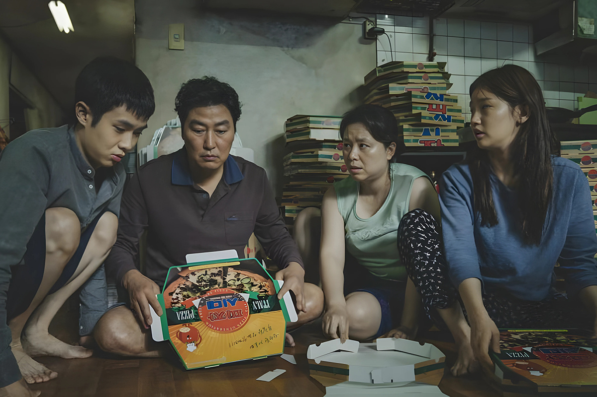
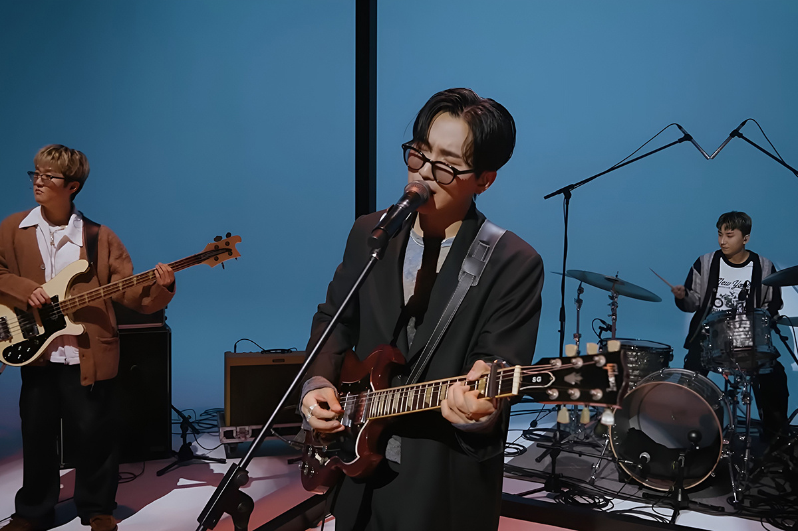
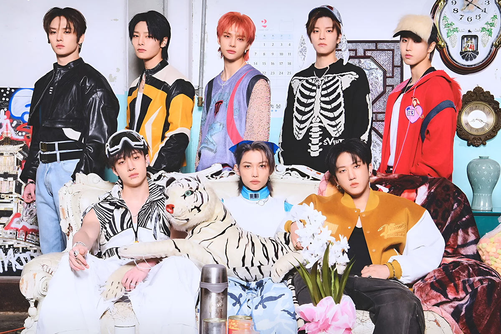

¡Hey k-poper! Agenda estas fechas
Conoce los próximos conciertos del K-pop en Chile
Conoce los próximos conciertos del K-pop en Chile

Ya desde mediados del año pasado han comenzado a confirmarse diferentes fechas en Chile que respaldan el éxito del K-pop en el país, el que se ha ido fortaleciendo más y más desde hace poco menos de una década fuera de las fronteras asiáticas.
El explosivo impacto de la ola coreana no ha dejado a nadie indiferente.
¿Música? Claro, el K-pop ha logrado inmiscuirse fuerte en las listas occidentales y te aseguro que, con el lanzamiento de algún grupo popular, sus vídeos en YouTube se encontrarán en tendencia durante días; ¿Series?, ¿cine? Por supuesto: los k-dramas han marcado un precedente en las plataformas de streaming convirtiendo a “Squid Game” en la serie más vista de Netflix y “Parasite”, de Bong Joon-ho, logró hacer historia como el primer film de habla no inglesa en ganar como Mejor Película en los premios Oscar.

Pero, ¿y si vemos qué tal está Chile con el panorama de los conciertos del K-pop?
Si nos vamos unos días hacia atrás, sabrás que Taemin, el más joven de la icónica banda SHINee, se presentó a inicios de febrero ante un Teatro Caupolicán repleto y que KARD, uno de los grupos más queridos en el país por su cercanía con Latinoamérica, también tuvo un paso por acá el mismo mes.
Hace nada, también en el Caupolicán, las chicas de NMIXX finalizaron dos fechas en el país con su gira “NMIXX Change Up: MIXX Lab”, las que las trajo por primera vez a Latinoamérica. ¿No saben quién es NMIXX? Quizás las conocieron por su paso como invitadas en la reciente edición del festival de Viña del Mar.
Ahora, démosle una vuelta a lo que se viene, porque este 2025 se viene FUERTE para los fans del K-pop y de la música coreana en general.

Empezamos con Wave to Earth, uno de los grupos indie surcoreanos más reconocidos mundialmente y que, de la mano de su último álbum “play with earth! 0.03”, serán parte del festival Lollapalooza 2025. Los chicos, que comenzaron a hacer música el 2019 con una propuesta ligada al lo-fi y al indie pop, se presentarán en este importante escenario el domingo 23 de marzo y es de los pocos artistas que tendrán un sideshow en el contexto del Lolla. El trío agendó una fecha en el Teatro La Cúpula el 25 de marzo, a dos días de su debut en Chile.
Si te gustan las vibras tranquilas, los ritmos con groove y las interpretaciones con sentimientos, esta banda podría estar pintada para ti.
Seguimos con un evento que escapa del K-pop y que se liga más a los k-dramas. El actor y modelo Hwang In-Yeop, conocido por sus papeles en las populares producciones “True Beauty” (“Belleza Verdadera”), “The Sound of Magic” (“El Sonido de la Magia”) y “Family By Choice” (“Familia por Elección”) pisará suelo nacional con su tour “In Love”, el que lo llevará a varias ciudades de Latinoamérica.
La cita con el artista fue también el 25 de marzo en el Teatro Caupolicán. Aquí, los fans de Hwang In-Yeop pudieron optar por diferentes beneficios (dependiendo de la entrada que hayan comprado), donde se incluían fotos grupales, hi-touch y photocards exclusivas. Destacamos, de todas formas, que las entradas para este encuentro ya estaban agotadas hace rato.

Ahora, si hay un show esperadísimo es el de STRAY KIDS.
Los chicos pasarán por el país con su tour mundial “dominATE”, gira que consolida su relevancia en la música, pero sobre todo su impacto en nuestro país. Para que se hagan una idea, de una pasada lograron vender todos los tickets de sus DOS FECHAS en el Estadio Bicentenario La Florida, las que se realizarán los próximos 27 y 28 de marzo. Recordar que este es el debut oficial de STRAY KIDS en Chile.
El octeto que debutó fuerte y seguro bajo el alero de JYP Entertainment hace casi 7 años, ha marcado un antes y un después en la industria del entretenimiento coreano y han logrado cimentar una trayectoria que va en alza, consolidándose como uno de los grupos más importantes del K-pop en la actualidad. Es cosa de ver sus números: en Spotify están llegando a los 10.5 millones de oyentes mensuales, mientras que su vídeo más reproducido en YouTube ya superó los 500 millones de visitas.
No olvidemos que el año está recién empezando y que más que seguro se sumarán nuevos artistas coreanos al cartel del 2025. Dicho esto, la pregunta del millón sería ¿Quién tiene que pasar por Chile sí o sí?
 Cultura
CulturaSé que suena raro hablar de calor extremo mientras en Chile todos están buscando la parka más gruesa del clóset.
 Cultura
CulturaEl hecho de que estemos entrando al mes de julio no se puede creer. Pero lo que tampoco se puede creer es la cantidad de artistas que han…
 Cultura
CulturaCuando hablamos de trabajos clásicos de la música chilena, siempre se nombran los discos de Violeta Parra, Víctor Jara, Los Jaivas o…